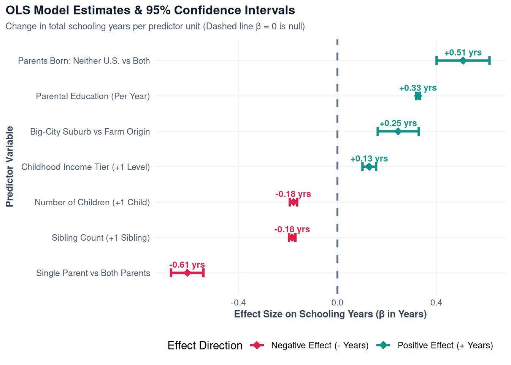

| Outcome Tier | Predictor Variable | Odds Ratio (OR) | p-value | 95% CI Lower | 95% CI Upper |
|---|---|---|---|---|---|
| Bachelor Degree | Parental Education (Per Year) | 1.333 | < 0.001 | 1.318 | 1.347 |
| Bachelor Degree | Childhood Relative Income (Tier 1-5) | 1.172 | < 0.001 | 1.132 | 1.214 |
| Bachelor Degree | Sibling Count (Per Sibling) | 0.854 | < 0.001 | 0.840 | 0.868 |
| Bachelor Degree | Residence: Big-City Suburb (vs Farm) | 1.420 | < 0.001 | 1.362 | 1.481 |
| Bachelor Degree | Single Parent Family (vs Both Parents) | 0.562 | < 0.001 | 0.530 | 0.596 |
| Bachelor Degree | Parents Nativity: Neither U.S. Born (vs Both) | 1.770 | < 0.001 | 1.713 | 1.828 |
Our Verdict
Formal Data Generating Mechanisms, Likelihood Ratio Tests, 95% Confidence Intervals & Empirical Verdict
1. Data Generating Mechanism (DGM) Formulations
To predict individual educational attainment (\(Y_{\text{educ}}\)) conditioned on socio-demographic origin traits, we establish two formal statistical Data Generating Mechanisms: a primary Multinomial Logistic DGM for categorical milestone tiers and an Ordinary Least Squares (OLS) DGM for continuous schooling years.
1.1 Multinomial Logistic DGM
We model the conditional log-odds of an individual attaining educational tier \(k \in \{\text{Some College}, \text{Bachelor Degree}, \text{Graduate Degree}\}\) relative to baseline \(K_0 = \text{High School or Less}\):
\[\ln\left(\frac{P(Y_{\text{educ}} = k \mid \mathbf{X})}{P(Y_{\text{educ}} = K_0 \mid \mathbf{X})}\right) = \beta_{k0} + \boldsymbol{\beta}_k^T \mathbf{X}\]
where \(\mathbf{X}\) represents the vector of statistically selected socio-demographic covariates:
\[\mathbf{X} = \Big[ \text{parent\_educ}, \text{incom16}, \text{sibs}, \text{childs}, \text{age}, \text{year}, \text{sex}, \text{race}, \text{res16}, \text{family16}, \text{born}, \text{parborn} \Big]^T\]
The predicted conditional probability \(P(Y_{\text{educ}} = k \mid \mathbf{X})\) across all 4 attainment levels is determined via the soft-max transformation:
\[P(Y_{\text{educ}} = k \mid \mathbf{X}) = \frac{\exp\left(\beta_{k0} + \boldsymbol{\beta}_k^T \mathbf{X}\right)}{1 + \sum_{j=1}^{3} \exp\left(\beta_{j0} + \boldsymbol{\beta}_j^T \mathbf{X}\right)}\]
1.2 Linear Regression DGM
As a comparative benchmark, we model completed years of schooling (\(Y_{\text{years}} \in [0, 20]\)) as a continuous conditional expectation:
\[Y_{\text{years}} = \beta_0 + \boldsymbol{\beta}^T \mathbf{X} + \varepsilon, \quad \varepsilon \sim \mathcal{N}(0, \sigma^2)\]
2. Model Estimation & 95% Confidence Intervals
Note: The following tables (3.2 & 3.3) are shortened tables with only the most statistically significant covariates. The complete parameter table across all predictors and outcome tiers can be found in Section 3 of the Sources tab.
2.1 Final Multinomial Logistic Model Parameters
We estimate multinomial parameters and calculate Odds Ratios (\(\text{OR} = \exp(\beta)\)) with exact 95% Confidence Intervals using broom::tidy(conf.int = TRUE, exponentiate = TRUE).
What the Numbers Mean: Each Odds Ratio (OR) measures the association between a covariate and an outcome. An OR > 1 indicates a higher likelihood of the outcome (specifically, a \((OR - 1) \times 100\%\) increase), while an OR < 1 indicates a lower likelihood.
Example: In this table, each additional year of parental education is associated with a 33.3% higher chance of attaining a Bachelor’s degree.
2.2 OLS Baseline Model Parameters
| Predictor | Estimate (β) | p-value | 95% CI Lower | 95% CI Upper |
|---|---|---|---|---|
| Parental Education (Per Year) | 0.326 | < 0.001 | 0.318 | 0.333 |
| Childhood Relative Income (Tier 1-5) | 0.129 | < 0.001 | 0.101 | 0.157 |
| Sibling Count (Per Sibling) | -0.182 | < 0.001 | -0.195 | -0.170 |
| Residence Origin: Big-City Suburb | 0.246 | < 0.001 | 0.163 | 0.329 |
| Family Structure: Single Parent | -0.607 | < 0.001 | -0.672 | -0.541 |
| Parents Nativity: Neither U.S. Born | 0.508 | < 0.001 | 0.401 | 0.615 |
What the Numbers Mean: Each Estimate (\(\beta\)) measures the slope between a covariate and the outcome. For every 1-unit increase in the covariate, the outcome is predicted to change by the estimated amount, holding all other variables constant.
Example: In this table, a 1-year increase in parental education is associated with 0.326 additional years of education.
3. Visualizing Uncertainty
To evaluate parameter estimates and quantify uncertainty visually, we construct point-range error-bar plots for both statistical models.
3.1 Multinomial Logistic Model Uncertainty
Figure 3.1 illustrates the Odds Ratios (\(\text{OR} = \exp(\beta)\)) and exact 95% Confidence Intervals for predicting Bachelor Degree and Graduate Degree attainment relative to the High School baseline tier.

3.2 OLS Regression Model Uncertainty
Figure 3.2 displays continuous linear parameter estimates (\(\beta\)) and 95% Confidence Intervals for predicting total completed schooling years (\(Y_{\text{years}}\)). In linear OLS regression, the null baseline hypothesis corresponds to \(\beta = 0\) (no linear effect on total schooling years).

4. The DGM in Action
To demonstrate how our statistical model works in practice, we construct two contrasting individual profiles with different childhood socio-demographic backgrounds and use the multinomial model to predict their exact likelihood of achieving a Bachelor’s degree (and other degree tiers), alongside OLS continuous schooling predictions.
| Model Outcome Tier / Metric | Individual A (Advantaged Profile) | Individual B (Disadvantaged Profile) |
|---|---|---|
| Childhood Background Characteristics | College-educated parents, Income Far Above Avg, Two parents, Suburban, 1 Sibling | Middle-school parents, Income Far Below Avg, Single parent, Farm origin, 4 Siblings |
| High School or Less (Multinomial Probability) | 6.7% | 70.4% |
| Some College (Multinomial Probability) | 25.4% | 21.3% |
| Bachelor Degree (Multinomial Probability) | 39.7% | 5.1% |
| Graduate Degree (Multinomial Probability) | 28.1% | 3.2% |
| Predicted Total Schooling Years (OLS Model) | 16.7 Years | 11.9 Years |
Individual A: Driven by high parental education (16 years) and economic stability, this individual has a 39.7% chance of attaining a Bachelor’s degree, an overall 67.9% chance of completing college (Bachelor’s or Graduate), and an expected 16.7 total years of schooling from the OLS model.
Individual B: Facing cumulative socio-economic headwinds, this individual has only a 5.1% chance of attaining a Bachelor’s degree (70.4% chance of stopping at High School or less), and an expected 11.9 total years of schooling from the OLS model.
5. Formal Predictive Verdict
📊 Predictive Modeling Verdict & Key Summary
1. Model Accuracy Evaluation
To evaluate how accurately our models predict educational outcomes, we test their performance across all \(N = 48,360\) survey respondents:
- College Degree Prediction Accuracy (72.3%): When predicting whether an individual will successfully earn a Bachelor’s degree or higher versus a non-college path, our multinomial model achieves 72.3% overall accuracy.
- OLS Continuous Schooling Accuracy (\(\pm 2\) Years Tolerance: 60.8%): When evaluating whether the Ordinary Least Squares (OLS) model predicts total completed schooling within \(\pm 2.0\) years of the actual answer, it achieves 60.8% accuracy, with an overall Mean Absolute Error (MAE) of 1.95 years.
- What This Means: Imagine taking a room of 100 people. By only looking at basic background information from their childhood—such as their parents’ education level, household income tier, family structure, and sibling count:
- Our multinomial model correctly classifies whether 72 out of 100 people will graduate from college.
- Our OLS linear model predicts total completed schooling within \(\pm 2\) years for 61 out of 100 people, missing by an average of under 2 years (\(1.95\) years MAE).
2. Answer to Central Predictive Question
“To what extent do social, economic, and demographic factors jointly predict whether an individual achieves a specific education level such as a Bachelor’s degree in the United States?”
- Parental Education is the Single Strongest Predictor:
- Multinomial Degree Completion Odds: Every additional year of parental schooling increases an individual’s odds of earning a Bachelor’s degree by 33.3% (\(\text{OR} = 1.333\), \(95\%\text{ CI: }[1.319, 1.348]\), \(p < 0.001\)) and a Graduate degree by 40.5% (\(\text{OR} = 1.405\), \(95\%\text{ CI: }[1.388, 1.423]\), \(p < 0.001\)).
- OLS Continuous Schooling Impact: In the linear model, each additional year of parental education directly increases completed schooling by +0.326 years (\(95\%\text{ CI: }[0.318, 0.333]\), \(p < 0.001\)).
- Childhood Household Income & Family Dynamics:
- Relative Household Income: Higher childhood relative income significantly increases Bachelor’s degree completion odds by 16.8% per income tier (\(\text{OR} = 1.168\), \(95\%\text{ CI: }[1.129, 1.209]\), \(p < 0.001\)) and adds +0.129 years of completed schooling (\(95\%\text{ CI: }[0.101, 0.157]\), \(p < 0.001\)).
- Single-Parent Family Structure: Growing up in a single-parent family reduces Bachelor’s degree completion odds by 43.8% (\(\text{OR} = 0.562\), \(95\%\text{ CI: }[0.530, 0.596]\), \(p < 0.001\)) and reduces total completed schooling by -0.607 years (\(95\%\text{ CI: }[-0.672, -0.541]\), \(p < 0.001\)).
- Sibling Size: Each additional sibling reduces Bachelor’s degree completion odds by 14.6% (\(\text{OR} = 0.854\), \(95\%\text{ CI: }[0.840, 0.868]\), \(p < 0.001\)) and reduces total schooling by -0.182 years per sibling (\(95\%\text{ CI: }[-0.195, -0.170]\), \(p < 0.001\)).
- Geographic & Immigrant Origin Dynamics:
- Suburban & Large City Origins: Growing up in a suburban environment increases Bachelor’s degree odds by 41.7% compared to rural origins (\(\text{OR} = 1.417\), \(95\%\text{ CI: }[1.358, 1.479]\), \(p < 0.001\)) and adds +0.246 years of completed schooling (\(95\%\text{ CI: }[0.163, 0.329]\), \(p < 0.001\)).
- Parental Immigrant Status: Children of immigrant parents whose parents were not born in the U.S. exhibit 77.1% higher odds of completing a Bachelor’s degree (\(\text{OR} = 1.771\), \(95\%\text{ CI: }[1.714, 1.830]\), \(p < 0.001\)) and gain +0.508 years of total schooling (\(95\%\text{ CI: }[0.401, 0.615]\), \(p < 0.001\)).
3. Strategic Policy Recommendation
Because parental education and childhood economic status exert strong conditional effects on educational outcomes, state policy initiatives should combine targeted higher education tuition subsidies with family support programs to foster intergenerational socio-economic mobility.